Вітальня · журнал «ДентАрт» 2019 №3
Президент УАЕС Андрій Пешко: «В Україні багато класних фахівців в естетичній стоматології, і це чудово!»
Розмовляли Сергій Радлінський і Ксенія Лазарєва,журнал «ДентАрт» (м. Полтава, Україна)
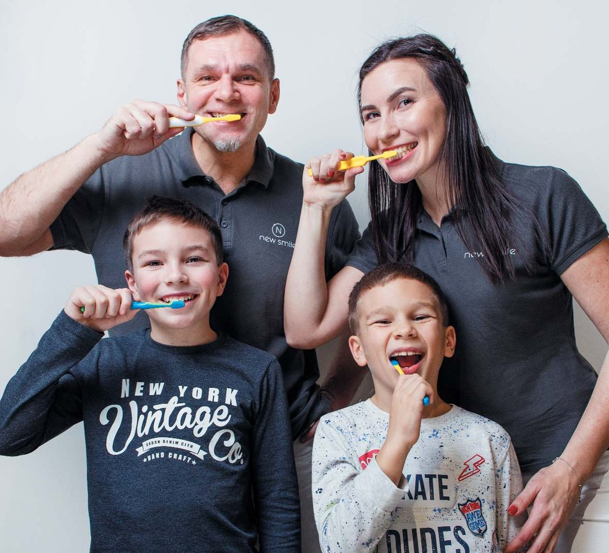
Стоматологічна спільнота давно знає Андрія Анатолійовича Пешка як висококласного фахівця в ортопедичній і естетичній стоматології, автора та ведучого популярних навчальних курсів. Шанують його і пацієнти, котрі звертаються за стоматологічною допомогою в його клініку «New Smile» у Києві. Останні два роки Андрій Пешко очолює Українську академію естетичної стоматології, тому ми і запросили його в дентартівську Вітальню, щоб дізнатися, як він оцінює стан естетичної стоматології в Україні, які бачить проблеми та шляхи їх вирішення.
«Спілкуванння з колегами з усього світу дає неймовірну наснагу»
– Добридень, Андрію! Коли представники журналу «ДентАрт», який де-факто є рупором Української академії естетичної стоматології, вирішили запросити Вас, президента академії, у нашу редакційну Вітальню, а також привітати із 50-річчям, з’ясувалося, що Ви там, де навіть по скайпу не поспілкуєшся, – у Мексиці. Але якби ми по скайпу тоді змогли з Вами поговорити, то де б Вас застали?
– Передусім, ясна річ, на конгресі Міжнародної асоціації педіатричної стоматології у Канкуні, де моя дружина Тетяна Пешко виступала з доповіддю. Спілкування з колегами з усього світу завжди дає неймовірну наснагу, виникають нові ідеї.
Ну, а свій день народження я провів у такому унікальному парку Explor, де ми літали на супертарзанках над джунглями і водоспадами на висоті 40-45 метрів, їздили на баггі по дорогах з печерами, плавали на каяку підземними річками і купалися в них. День був насичений і завершився потужною вечіркою, словом, відзначили весело. А тепер з новими силами – до роботи!
– Отже, про роботу. Ви спеціалізуєтеся в галузях ортопедичної і естетичної стоматології. Що б Ви назвали найбільшими досягненнями в цих галузях і які проблеми потребують, так би мовити, першочергового мозкового штурму науковців і стоматологів-практиків?
– Найбільше досягнення на сьогодні – розвиток цифрової стоматології. У багатьох моментах вона полегшує роботу. Цифрові технології – це те, до чого всі прагнуть і що дозволяє підняти стоматологію на новий рівень.
А що турбує, так це те, що у нас багато лікарів беруться за такі роботи, до яких вони, можливо, ще не готові, – капітальне, загальне, функціональне протезування, не маючи чіткого уявлення про систему оклюзії, функціонування суглоба, протетичну площину. Я це часто бачу у реферативних пацієнтів!
Якщо лікаря більше цікавить фінансовий аспект, то він намагається поставити більше коронок, вінірів, мостоподібних конструкцій, де треба й не треба, і дуже часто через це виникає багато помилок і страждають пацієнти. Вважаю, це проблема. Кожен лікар має розраховувати свої сили, і якщо бачить, що в чомусь він ще не досить компетентний, то слід перенаправити пацієнта іншому лікареві, а самому вчитися в цьому напрямку.
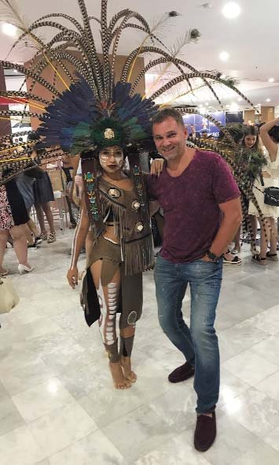
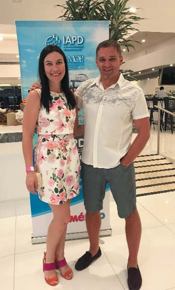
Також у нас ще не виділена така спеціалізація, як естетична стоматологія. Я вважаю, що лікар з естетичної стоматології – це фахівець, який володіє усіма техніками прямої і непрямої реставрації плюс роботою з м’якими тканинами. Принаймні корекцією рожевої естетики, подовженням клінічної коронки в естетичній зоні він має володіти і розуміти можливість ортодонтичних корекцій. Слава Богу, в Україні багато класних спеціалістів в естетичній стоматології, молодих, прогресивних, і це чудово!
«У 1990-х я побачив, що таке сучасна стоматологія, у Канаді»
– Якщо ми заговорили про молодих спеціалістів, то цікаво було б поглянути на те, як відбувалося Ваше професійне становлення. Ви закінчили Львівський медичний університет 25 років тому, під час інтернатури працювали у стоматологічних клініках Львова, а вже в серпні 1994 року розпочалося Ваше стажування і післядипломна практика в Канаді – у стоматологічному коледжі Саскачеванського університету і в Denta Care Group в Едмонтоні. Що значив для Вашого професійного становлення цей період?
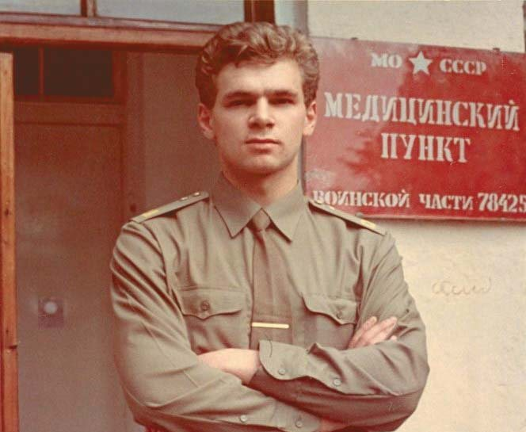
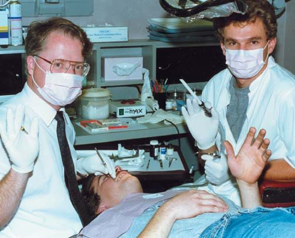
– У Саскачеванському університеті я ходив на лекції з четвертим-п’ятим курсом. А в мого кузена в Едмонтоні приватна практика, і саме там я побачив, що таке власна справа у стоматології, бо це ж було у 1994 році, коли у Львові відкривалися тільки перші приватні клініки, щойно з’явилися сучасні (на той час) композити і фотополімеризаційні лампи. А в Канаді тоді вже був зовсім інший рівень стоматології. І коли я з районної державної стоматологічної клініки приїхав і побачив той рівень (структуру, менеджмент, ставлення до пацієнтів) – то був потужний заряд для мозку. Повернувшись до Львова, став шукати, де б влаштуватися в нашому місті у якусь прогресивну клініку, але то було непросто.
– А в Канаді Ви б не хотіли залишитися?
– Ні, хоча це було б не складно: здати екзамен і сплатити п’ять тисяч доларів реєстрації… Нині це складніше, треба мінімум дворічний курс пройти. Але я не залишився ні в Канаді, ні в Москві. Я люблю Україну!
– То Ви і в Москві працювали?
– Ішов 1995 рік, у Москві почався бум стоматології. Інвестори зрозуміли, що це непоганий бізнес, і там бракувало нормальних стоматологів. Мої однокурсники поїхали, влашувалися в гарні клініки, кажуть, приїжджай, тут рівень дуже високий і фінансові умови добрі. То я теж вирішив спробувати, влаштувався у російсько-швейцарську клініку «Валекс». Вона донині працює. Колектив був інтернаціональний, кілька росіян, українці, вірмени, грузини, усі молоді, спраглі знань, веселі. Гарно проводили час.
Влаштовувався на роботу не без пригод. Пішов у райвідділ міліції для тимчасової реєстрації. Майор сказав, що все добре, спитав, де працюватиму, пообіцяв, що все зроблять. А за кілька днів у клініку з’являється наряд міліції з автоматами: «У вас здесь работает один нелегальный человек, надо вопросы порешать».
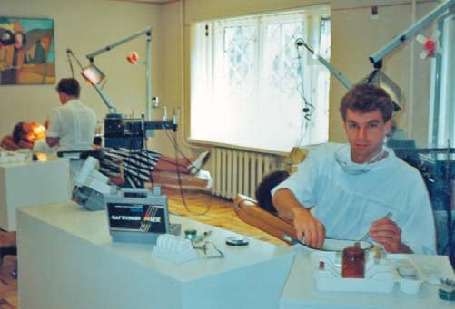
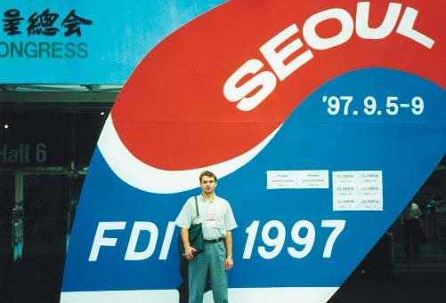
Швидко оформили довідку, що Пешко на стажуванні, а я знайшов платний інститут менеджменту і маркетингу, заплатив за перший місяць навчання, мені дали довідку, що я студент, і у райвідділі нарешті оформили тимчасову реєстрацію.
Тоді по Москві приїжджим не можна було ходити, якщо у тебе в кишені не було квитка на зворотну дорогу. Відразу ж в «обез’яннік» забирали.
Та, незважаючи на умови постсовєцького буття, я і в Москві пройшов добру школу. Коли приїхав, то клініці «Валекс» потрібен був ортопед. Я до того працював стоматологом-терапевтом, зробив у Львові лише одну металокерамічну коронку, але ортопедія була мені добре знайома, оскільки у мене тато зубний лікар і зубний технік і я ще з 9 класу допомагав йому робити штамповані коронки, навіть золоті виготовляв. Я одержав тоді добрий досвід, який у поєднанні із сучасними знаннями дозволив мені працювати ортопедом. У клініці була лабораторія, я спілкувався з техніками. Також допомогло те, що в ті часи у Москві доктор Євген Йоффе проводив цикл семінарів, майстер-класів, які були дуже популярними. Я багато цих циклів пройшов.
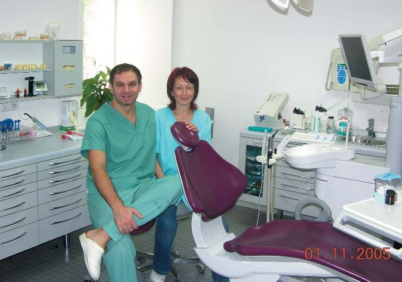
У Москві я жити довго не збирався. Та й дефолт стався, відтак 2000 року я повернувся до Києва. Спочатку працював у друзів, став консультантом компанії 3M ESPE. Мені пропонували стати головним менеджером цієї компанії по всьому СНД, але я відмовився. Пояснив, що мені подобається стоматологія, мануальна робота, а не менеджерська. Потім відкрив стоматологічний кабінет на одне крісло, який трансформував у невелику клініку на два крісла. Далі до розбудови клініки долучилася моя дружина. Нещодавно обновили приміщення, збільшили площу клініки. Стало цікавіше, але більше роботи, більше відповідальності.
– Більше часу забирає бізнес…
– Так. Попрацював – а потім з тими чи іншими організаційними питаннями треба розбиратися. Ми з дружиною це робимо разом, то трохи легше.
– Наскільки важко в Києві створити приватну клініку і чим особлива Ваша «New Smile»?
– Чесно кажучи, важко! Тому й строки відкриття клініки зсунулися – планували на вересень 2017 року, потім на листопад, а відкрили в лютому 2018-го. Але було дуже цікаво. Я взагалі люблю робити всілякі проекти, ремонти… У нас є класний дизайнер, яка нам допомагала. У приміщенні, де тепер «New Smile», раніше був такий радянський гастроном. Стіни в салатовій плиточці, тришарова підлога… Довелося робити потужний демонтаж. Важко, але цікаво. Якщо мати бажання, то все можна зробити.
Чим особлива «New Smile Dental Clinic»? Наша філософія – це концепція «повної стоматології»: усі компоненти зубощелепної системи (зуби, м’які тканини, кісткові структури, м’язи і суглоби) взаємопов’язані та взаємозалежні для ідеального функціонування. Ми бачимо цілісну картину шляхом клінічного аналізу взаємопов’язаних компонентів і комплексно інтегруємо функціонально-естетичні параметри в процесі реалізації плану лікування. Простіше кажучи, ми дбаємо не лише про здоров’я зубів і ясен, а й про зубощелепну систему в цілому – комфортно жувати, розмовляти і усміхатися!
Ясна річ, у процесі лікування та естетичної реабілітації використовуємо прогресивні технології, матеріали та обладнання і застосовуємо техніки, найменш травматичні для зубів, ясен, м’яких тканин ротової порожнини.
Мій світогляд як естетичного стоматолога, крім провідних українських стоматологів, сформували Галіп Гюрель, Мауро Фрадеані, Паскаль Маньє.
«Лекторська діяльність – це колосальний стимул до самовдосконалення»
– Коли в Інтернеті читаєш про всі курси, на яких Ви підвищували свою кваліфікацію, стажування в клініках Німеччини, Італії, інших країн, а також про десятки конференцій, у яких Ви брали участь, то розумієш, що Андрій Пешко сам живе за принципом «вік живи – вік навчайся» й інших до того спонукає. Ви керували навчальним центром Інститут естетичної стоматології. Що для Вас значить викладацька діяльність?
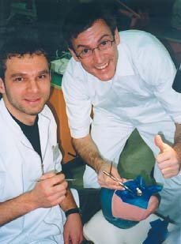
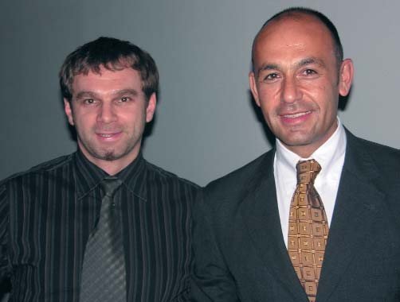
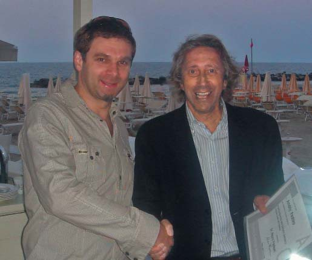
– Коли я її починав у ролі консультанта компанії 3М ESPE, то було взагалі шалено! Стільки країн об’їхав! А це все – спілкування, зустрічі з новими людьми, обмін досвідом, нові друзі – збагачує і професійно, і духовно. Ясна річ, коли ти читаєш лекції, це дає якусь популярність, що добре для розвитку своєї справи, і це колосальний стимул до самовдосконалення, тому що готуєшся до лекції, як до екзамену. Я ніколи не читаю одну й ту саму лекцію на різних семінарах підряд, весь час роблю корекцію, додаю нові моменти. І хоч нині як лектор я трохи обледачів (через завантаженість з облаштуванням нової клініки), але й нині до мене колеги, які слухали мої лекції, посилають реферативних пацієнтів. Спілкування, вдосконалення, нові знання – це завжди цікаво. Стоматолог, який багато годин працює біла крісла пацієнта, відчуває дефіцит такого спілкування.
– Напевне, бажання такого спілкування і занесло Вас до Мексики на конгрес Міжнародної асоціації педіатричної стоматології…
– Він був присвячений 50-річному ювілею цієї асоціації. Тетяну запросили виступити з доповіддю про лікування карієсу у дітей до 3-х років.
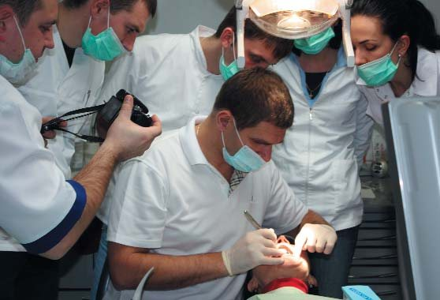
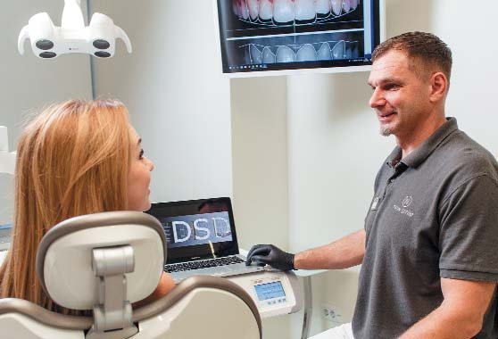
– Отже, Тетяна вийшла в лідери як лектор. Розкажіть про свою стоматологічну родину. І чи бачите Ви своїх синів стоматологами у майбутньому?
– У мене в родині всі були медиками. Дід – хірург у районній лікарні на Житомирщині, батько – зубний лікар і технік, мама – кардіолог, один дядько – стоматолог, ще один – хірург... Ясна річ, коли ти ще школярем за батьковою роботою у зуботехнічній лабораторії спостерігаєш і тобі так хочеться і самому спробувати власними руками щось подібне зробити, це залишає слід і може зумовити вибір професії. Але мої сини – це покоління АйТі, для них головне – комп’ютери, смартфони, планшети, Ютуб...
– Тоді їх чекає цифрова стоматологія!
– Старший син Максиміліан, якому 11 років, може, і не буде стоматологом. А от молодший, восьмирічний Назарій, більше за уподобаннями на мене схожий: любить сидіти і щось робити руками. Нині у світі стільки нових спеціальностей, про які ми 10-20 років тому не чули і не знали, що воно й таке! Наші сини самі вирішуватимуть, продовжувати сімейну справу чи шукати щось нове. Змушувати їх ніхто не буде.
– А Вас змусили стати стоматологом?
– Ні! Я ж кажу: ще в школі татові допомагав, робив штамповані коронки, афінаж. Змалку прагнув щось своїми руками робити: школярем ходив на заняття у гурток з випалювання, фотогурток, з дерева щось вирізав. Наприклад, у мене є бас-гітара, гриф якої я повністю вирізав з дуба. Це я школярем робив, коли був у рок-гурті, де грав на бас-гітарі та ударних. Ручна робота мені донині подобається. У нас на дачі є гриль-мангал, я сам його зробив з вогнетривкої цегли.
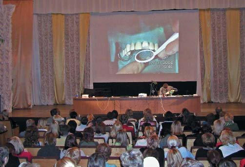
Незважаючи на розвиток цифрових технологій, стоматологи залишаться, як ювеліри, майстрами ексклюзивної ручної роботи. І мені здається, що у майбутньому вона буде цінуватися ще більше. Цифра нас не задавить. Вона може полегшити роботу техніків, лікарів, але ви самі розумієте, що стоматологія – це мистецтво!
– А якби не стоматологія – ким би міг бути Андрій Пешко?
– Я собі навіть не можу уявити, бо вже стільки років у стоматології, і нічого іншого мені не треба. Напевно, її могло б замінити лише якесь ремесло, ручна робота.
Ще мені подобається кулінарія. Коли буду ближче до пенсії, готуватиму щось особливе, щоб потішити свою родину.
– Лоренцо Ваніні купив ресторан. Може, й Андрій Пешко ресторан відкриє?
– Купити ресторан – це вже бізнес. Це клопоти і відповідальність. А я кажу про те, що дарує радість твоїй родині.
– Ваніні обрав цей ресторан тому, що там було три роялі. Прийти пограти, розім’яти руки…
– Мені ще подобається працювати на землі, вирощувати на дачі різні плодові рослини. Це дарує спокій. Для стоматолога це добре, бо знімає стрес. Вирощую виноград, став робити вино. У світі так багато цікавих речей, які дають людині можливість духовно розвиватися. Та у нас завжди не вистачає часу…
Я дуже люблю природу. Київ улітку – місто розпечених асфальтів, дихати нічим. Тож наша дача на Дніпрі – зона певного комфорту.
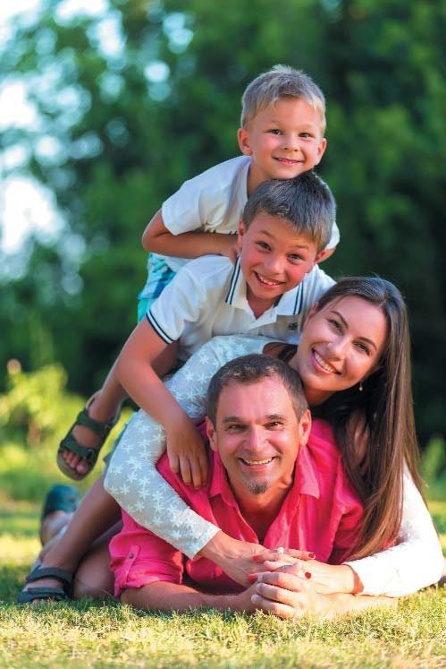
«У стоматології ще надто багато непотрібних бюрократичних обмежень. Це треба змінювати»
– Цього літа стало модним вирушати не тільки на дачу, а й у політику реформи робити…
– Бажання змін і нових облич – це нормально. Навіть деякі стоматологи пішли в політику. Якщо це нові прогресивні люди – це буде корисно. Треба зробити перезавантаження в Україні. Скільки ми можемо товктися на місці, мучитися… Як країна, як народ, ми не заслужили такого!
– А якби Вас призначили міністром охорони здоров’я, які б реформи в медицині Ви зробили найперше? І чи стоматологія має залишатися в межах медицини, чи її слід виокремити на принципах самоврядування?
– Медицина у нас надто довго була якоюсь залишковою галуззю. Наших можновладців це, мабуть, не хвилювало, бо вони лікувалися за кордоном. Є випробувані, перевірені світовим досвідом рецепти організації охорони здоров’я, коли діє страхова медицина, клініки всім забезпечені, страхові компанії покривають витрати на лікування. Не розумію, чому у нас страхова медицина до цього часу не працює…
Щодо стоматології, то тут теж є різні моделі. У світі переважає приватна стоматологія, але в усіх країнах є університетські клініки, де можуть лікуватися бідніші верстви населення. І знову ж таки, до певної міри витрати пацієнтів на стоматологічне лікування покриваються страхуванням.
Звичайно, я зробив би так, щоб була мінімальною зарегульованість нашої стоматології, щоб не дошкуляли оті старі санітарні норми. Надто багато ще непотрібних бюрократичних обмежень. Це треба змінювати.
Національна спілка стоматологів переймається реформуванням галузі, ми, її члени, до цього долучаємося, просто у нас ще не все виходить так, як хотілося б.
«Естетична стоматологія в Україні сьогодні на досить високому рівні»
– А тепер поговоримо про дороге для нас дітище – Українську академію естетичної стоматології. 31 грудня закінчується Ваша каденція президента, і Андрій Пешко переходить у позицію паст-президента, щоб у наступні два роки завершувати те, що не встиг зробити за два проминулі роки. Який рівень естетичної стоматології в Україні порівняно з іншими країнами?
– Чесно кажучи, я зробив менше, ніж хотів, бо все-таки був дуже завантажений будівництвом клініки. Але і в ролі паст-президента максимально допомагатиму академії.
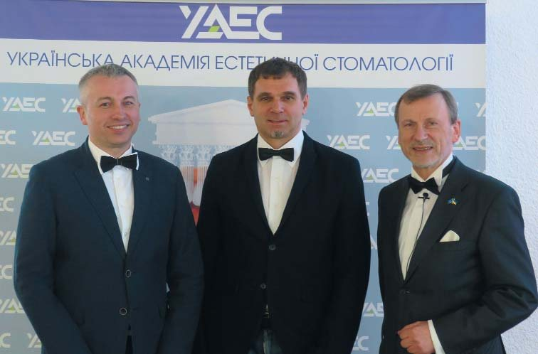
Естетична стоматологія в Україні сьогодні на досить високому рівні. Я вже казав, що у нас з’явився прошарок молодих висококваліфікованих стоматологів, і вони реально працюють на найвищому рівні. Ви знаєте цих людей, вони читають лекції і в Україні, і за кордоном. Ще років 10 тому такого у нас не було. В Україні проводиться багато курсів з естетичної стоматології, майстер-класів, і активність стоматологів висока. Єдине – треба більше згуртуватися навколо УАЕС.
– Українцям знайоме поняття суржику як штучної суміші елементів двох чи кількох мов без дотримання норм літературної мови. Чи бачите Ви прояви такого собі «суржику» в естетичній стоматології?
– Ха-ха! Окремі моменти є, пов’язані з діагностикою, плануванням лікування. Деякі мережеві клініки роблять багато маркетингових заяв, не зовсім адекватних, інколи пов’язаних і з естетичною стоматологією.
Але сьогодні в Україні є у кого повчитися всім тонкощам естетичної стоматології і правильної термінології, навіть не виїжджаючи за кордон. Тут ми на правильному шляху.
– Ваші побажання колегам, які читатимуть це інтерв’ю.
– Наша робота складна, але вона приносить і задоволення. Тож бажаю всім колегам кожну роботу виконувати так, ніби робиш її для себе чи найрідніших людей. Якщо на перше місце завжди ставити здоров’я пацієнта, працювати мінімально інвазивно і з урахуванням конкретної клінічної ситуації, добре володіти сучасними технологіями, – успіх і задоволення завжди будуть вашими супутниками.
Окремо хочу звернутися до колег-перфекціоністів, які прагнуть одержати суперрезультат у кожній реставрації і дуже страждають, коли щось не вийшло ідеально, впадаючи у депресію. Не опускайте рук! Учіться реально оцінювати ситуацію і бачити всі ризики! А ще – дотримуйтеся нормального балансу роботи і відпочинку. Не треба себе виснажувати. Знайдіть цей баланс, і тоді працюватиметься легше, результат буде кращий, і від цього виграють усі!
Розмовляли Сергій Радлінський і Ксенія Лазарєва
Світлини з архіву Андрія Пешка